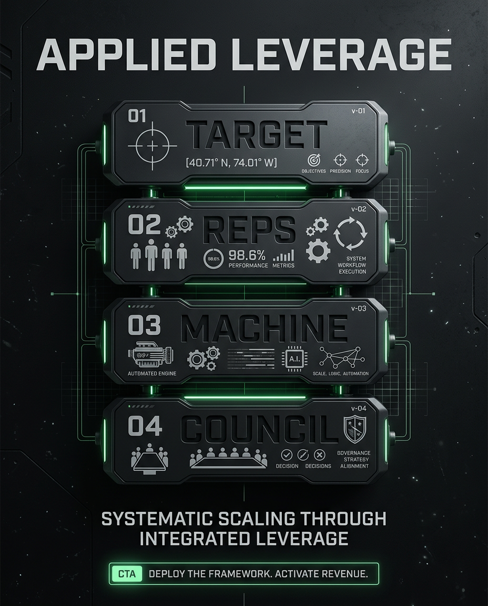
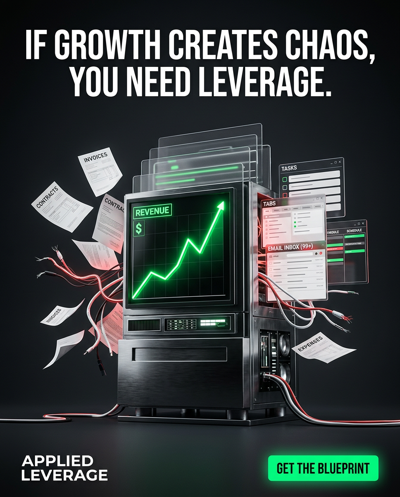
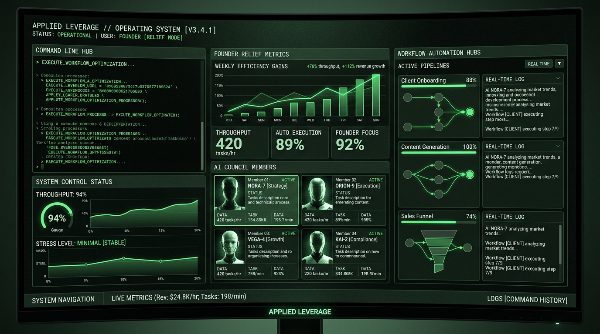

Applied Leverage Live
A deep dive into the offer, the operating model, the build process, the deliverables, the client experience, and why this works for already-moving operators who are sick of carrying the whole business manually.
In four weeks, install the first real leverage stack inside a working service business.
Clear target. Daily reps. First automation layer. AI council doing real work.
Done-with-you implementation sprint
4 weeks · $3,500 flat · Built for agency owners and consultants with demand already on the board.
Operators
Not beginners. Not tourists. Not tool collectors.
Founder drag
The business still routes through your memory, hands, and attention.
Leverage
Less manual work. Better throughput. Cleaner execution.
01 · Executive summary
Applied Leverage is not selling more information. It is selling installed operating leverage inside a business that already has motion.
The Implementation Sprint is a four-week build for agency owners and consultants who already make money but are still doing too much by hand. The offer exists to reduce founder dependency. Not in theory. In actual workflow.
By the end of the sprint, the client leaves with a sharper target and offer, a daily rep system, a first automation layer, and an AI council with specific jobs and boundaries.
This is for businesses that have already proven someone will pay. That matters. Because once demand exists, the real constraint is usually not knowledge. It is operational structure. The founder is still holding sales, follow-up, delivery coordination, admin, and decision-making together by force of will.
That works right up until growth turns into chaos. Then every sale increases workload. Every project creates more context switching. Every missed follow-up is another tax paid to founder overload. Applied Leverage attacks that exact problem.
The sprint installs leverage in layers. Week one narrows what the business is actually trying to sell and to whom. Week two installs the repeatable reps required to move pipeline and execution every day. Week three builds the first machine around the most painful manual path. Week four creates an AI council that can research, draft, audit, and support decisions without becoming noise.
The result is not a magically autonomous company. That would be a stupid promise. The result is the first working leverage stack inside a real operating environment. Enough to save time, increase clarity, and create a foundation the client can actually build on.
02 · Market problem
The business lives in the founder’s head. Follow-up rules, delivery steps, offer positioning, edge-case handling, and standards are not fully externalized.
Plenty of software. Not much leverage. Apps exist, but nobody has designed the actual operating system tying them together.
New clients do not make the machine stronger. They make the operator busier. That means the system is still manual.
Most service businesses can brute-force the early stage. The founder sells by instinct, delivers by talent, and keeps things alive through responsiveness. But once there is real client volume, the hidden costs start stacking up: inconsistent follow-up, slow proposal turnaround, messy handoffs, repetitive admin, delayed decisions, and the constant mental burden of remembering what must happen next.
At the same time, the market is now flooded with “AI solutions” that promise freedom but mostly add one more layer of dashboards, prompts, and false complexity. Operators are not short on options. They are short on systems that reduce load.
That gap is where Applied Leverage wins. It speaks to a business owner who does not need motivation and does not need another giant software migration. They need a machine that removes pressure from the founder in the places that actually hurt.
| Symptom | What the operator feels | What is actually broken |
|---|---|---|
| Lead follow-up is inconsistent | "I know money is slipping through the cracks." | No repeatable reps or automation path for pipeline movement. |
| Delivery starts are messy | "Every new client feels heavier than it should." | Onboarding and prep are founder-dependent. |
| Too many offers / directions | "We’re busy, but not focused." | Target and shot are not locked. |
| AI tools create noise | "We’re playing with toys, not increasing throughput." | No role design, boundaries, or workflows for agents. |
03 · Offer thesis
That line cuts through a lot of nonsense. A surprising number of service businesses think they have a top-of-funnel problem when what they actually have is a capacity problem. More leads dumped into a weak system do not create growth. They create backlog, poor response times, inconsistent sales process, and a founder who becomes even more overloaded.
The right sequencing move is to tighten the operating model first. That does not mean waiting forever to sell. It means making sure the business can support more throughput without requiring the founder to carry every extra pound manually.
Applied Leverage packages that sequencing into a sprint. Fast enough to feel decisive. Narrow enough to implement. Sharp enough to sound different from generic coaching or automation agencies.
In four weeks, the client walks away with a business that is easier to run, clearer to sell, and less dependent on them doing every damn thing by hand.
That promise is strong because it is tangible, grounded, and believable.
04 · Audience
These buyers are usually not confused about whether they are hardworking. They know they are. That is part of the problem. They have carried too much for too long, and they have normalized a level of operational friction that should not be normal.
They often have some decent ingredients: clients, a service that works, a reputation, maybe a few tools, maybe even a VA or small team. But the business is still structurally reliant on the founder to notice, remember, nudge, draft, review, and decide almost everything important.
That creates a background feeling of fragility. Revenue may be real, but the machine is not robust. The founder knows that one bad week, one family emergency, one travel stretch, or one surge in workload can expose how much of the system is still held together manually.
This offer makes immediate sense to that person because it names the problem correctly. Not laziness. Not lack of ambition. Not “mindset.” Founder dependency.
05 · Anti-audience
No offer. No clients. No proof of demand. They need a different first move.
People hoping for a done-for-you miracle without implementation effort.
They collect AI apps, but never redesign the way work actually happens.
If nobody wants the offer yet, system design is not the first bottleneck.
A convincing offer is not convincing because it says yes to everybody. It is convincing because it sounds like it knows exactly where it works and where it does not. That signals competence. It also protects delivery quality.
Applied Leverage should say no quickly when the fit is wrong. That keeps the positioning clean: this is for already-working operators who need leverage installed inside an existing machine.
Creative direction from the launch pack: chaos on one side, calm system on the other. Simple. Hits the nerve.
06 · Positioning
| Category | What they usually sell | Where Applied Leverage is different |
|---|---|---|
| Generic business coaching | Advice, mindset, accountability, strategic discussion | Applied Leverage installs systems, assets, workflows, and agent roles in a real business. |
| AI consultants | Demos, tools, automations, novelty | Applied Leverage ties AI directly to operator relief and throughput. |
| Marketing strategy shops | Positioning docs and growth plans | This ends in daily reps and execution systems, not just better slides. |
| Ops agencies | Broader operations support, often heavier scope | This is a sharp four-week sprint aimed at the first leverage stack. |
Applied Leverage helps already-working operators turn a founder-dependent service business into a systemized machine with automation and AI leverage.
The language of Target, Reps, Machine, Council creates a distinct mental frame. It is easier to remember than vague “systems consulting,” and more grounded than generic AI transformation talk.
It turns leverage into an operating model people can picture. Target tells them where the effort goes. Reps tells them what they do daily. Machine tells them what gets automated. Council tells them how AI supports the human operator. That is memorable, teachable, and saleable.
07 · Core promise
A weak promise gets ignored. A ridiculous promise gets distrusted. The right promise lives in the middle: strong enough to create desire, grounded enough to survive scrutiny.
Applied Leverage does that by focusing on what can actually be installed in four weeks. It does not promise complete liberation from operations. It promises the first meaningful layer of leverage inside a working business. That is both exciting and plausible.
Less pressure. More control. Relief that the business is no longer running purely on memory and hustle.
Clearer offer, repeatable daily motions, first automation layer, and AI support with defined jobs.
A stronger base for future hiring, scaling, productization, or deeper automation.
08 · Delivery model
Because the buyer does not need more thinking time. They need implementation pressure, design help, and real outputs.
Because black-box systems often break. The founder needs to understand the machine enough to run it after the sprint ends.
Serious buyers do not want to be abandoned with a Notion doc and a pat on the back. They also do not want to pay for a mystery machine they cannot operate. Done-with-you sits in the sweet spot: real help, real implementation, real understanding.
09 · Sprint architecture
Define the audience worth serving and the offer worth pushing.
Install the daily motions that keep pipeline and execution moving.
Automate the first manual path that is slowing the whole business down.
Deploy role-based AI support for research, drafting, QA, and decisions.
If you automate before choosing the right target, you speed up confusion. If you build AI agents before the workflow exists, you create expensive noise. If you talk strategy forever without daily reps, nothing compounds. The order here is not arbitrary. It is the sequencing logic that makes the sprint work.

This visual should appear in the sales conversation. It compresses the entire offer into one memorable frame.
10 · Week 1
The first job is focus. A lot of operators are leaking effort across too many audiences, too many offers, or too many half-formed angles. Before building process, we decide what the business is actually trying to win.
The client stops trying to be relevant to everybody. They leave the week with a cleaner sales conversation, a more coherent market message, and a better ability to decide which opportunities deserve effort.
That alone can remove a shocking amount of drag. Because ambiguity is expensive. Every unclear target creates wasted outreach, messy positioning, and delivery that must adapt to too many different contexts.
11 · Week 2
Businesses do not compound on good intentions. They compound on repeated motions. Week two is about installing the daily rep system that creates consistency in pipeline movement and execution.
| Rep area | What gets designed | Why it matters |
|---|---|---|
| Outreach | Who gets contacted, when, how, and with what angle | Removes randomness from prospecting. |
| Follow-up | Cadence, triggers, and messaging standards | Stops warm leads dying in silence. |
| Pipeline review | Scoreboard and review rhythm | Keeps activity visible and accountable. |
| Execution reps | Routine tasks and quality checks | Prevents operational drift after the sale. |
Reps beat mood. If growth only happens when the founder feels switched on, the system is weak. Week two turns effort into cadence. That increases predictability without requiring more hours.
12 · Week 3
This is where the first automation layer gets built. Not because automations are sexy. Because they remove repetitive work from the founder’s plate and make the system more reliable.
The machine is a sales idea because it gives the buyer something concrete to want: less hand-holding, fewer dropped steps, more throughput.
13 · Week 4
The AI council is where most offers get stupid. Applied Leverage avoids that by giving agents specific jobs, clear boundaries, and obvious use cases tied to the business.
Gathers inputs, options, market context, and decision support faster than the founder can manually.
Produces first-pass assets, client-facing materials, outlines, and internal docs for review.
Checks gaps, consistency, risk, and missing steps so errors get caught earlier.
Without role design, AI becomes noise. With role design, it becomes a force multiplier. The founder stops staring at a blank prompt and starts routing defined work to defined capabilities.
That makes the council usable. More important, it makes it retainable. The system survives because it fits the business instead of floating beside it.
14 · Deliverables
| Layer | Possible deliverables | Business effect |
|---|---|---|
| Target | Target definition, offer positioning, messaging hierarchy, qualification filter | Cleaner sales and better strategic focus. |
| Reps | Daily cadence, outreach scripts, follow-up flow, scoreboard | More consistency and pipeline movement. |
| Machine | One live automation path, workflow map, trigger logic, documentation | Less manual admin and better reliability. |
| Council | Defined agent roles, prompt library, usage guidance, boundaries | Faster research, drafting, QA, and decisions. |
The deliverables are not templates dropped from the sky. They are tailored to the client’s operating reality. That makes them more convincing in the sales process and more valuable in execution.
15 · Client experience
The best offer documents do not just explain the deliverables. They show the lived experience of the engagement. Prospects want to know: What happens after I say yes? How much time will this take? Will this be heavy? Will I understand what gets built?
When a prospect can imagine the experience clearly, the risk feels lower. This is especially important with high-agency buyers. They are not buying because the copy is pretty. They are buying because they can see how the engagement will create an immediate shift in how the business runs.
16 · Time commitment
A smart objection to address is time. The right buyer is already overloaded. If the sprint sounds like another part-time job, it creates friction. So the real answer is not “almost no time.” That would sound fake. The real answer is “focused time, spent on the right things, with a payoff in reduced overhead.”
The client needs to make sharp calls when options are presented. Delay kills momentum.
A few focused hours each week. Enough to collaborate, review, and adopt the system.
The point is to buy back more hours than the sprint consumes.
Expect a few focused hours each week. The sprint is built to reduce overhead, not create another layer of it.
17 · Proof logic
Early offers do not always have a wall of case studies. That is fine, but it means the trust stack has to be built from other materials: clarity, specificity, a believable process, obvious operator logic, and visible assets that demonstrate thinking quality.
The prospect does not need “proof” in the abstract. They need evidence that you understand the problem at operator level and have a believable way to improve it. This document does exactly that.
18 · Objections
| Objection | What they really mean | Winning response |
|---|---|---|
| "I can figure this out myself." | I do not want to look dependent. | You probably can. The question is whether you should burn the time doing it alone while already overloaded. |
| "I already use AI tools." | I do not want to pay for hype. | Tools are not the same as an operating model. The council is about defined work, not novelty. |
| "I need more leads, not systems." | I feel pressure at the top of funnel. | More leads into a broken machine create more stress. Fix the operating leverage and lead gen gets more valuable. |
| "How do I know it will reduce workload?" | I do not want another project that adds complexity. | We focus on a painful manual path first so the result is visible in time saved, reduced friction, or faster throughput. |
| "Why $3,500?" | I am comparing this to generic consulting or software spend. | This is cheaper than months of drift, dropped opportunities, and founder overload. You are buying installed leverage, not more advice. |
19 · Pricing
The sprint is not priced like a course because it is not a course. It is not priced like broad consulting because the scope is narrower and the outcome is more concrete. It is a premium implementation sprint designed to create a visible operating shift in one month.
20 · Messaging
This speaks directly to tired operators who have already been sold shiny software without meaningful relief.
This reframes growth pain as an operating system problem, not a motivation problem.
Fast, visceral, and easy to understand. It gets to founder dependency immediately.
Memorable, visual, and consistent with the darker premium aesthetic already used in the campaign assets.
Do not sell AI novelty. Sell operational relief plus throughput. That is the whole game.
21 · Sales narrative
| Stage | What the prospect is thinking | What the offer must do |
|---|---|---|
| Attention | "That’s me. Growth is making things heavier." | Name the pain with precision. |
| Interest | "This sounds different from the usual AI fluff." | Show the four-layer model and the practical sequence. |
| Desire | "I can picture how this would reduce drag." | Make deliverables and experience concrete. |
| Decision | "This feels worth the price and low enough risk to move." | Clarify fit, commitment, and next step. |
It does not try to hypnotize the buyer. It simply moves them from accurate diagnosis to believable mechanism to tangible result. Good operators buy when the logic is sharp.
22 · Strategic rationale
Applied Leverage is building toward an agent-powered business model. That means the company itself needs offers that demonstrate leverage in public, not just talk about it. The Implementation Sprint does that. It is productized enough to sell cleanly, premium enough to generate meaningful cash, and operationally aligned with the wider Applied Leverage thesis.
Direct service revenue now, while building assets and proof that support future leverage-based products.
Shows Applied Leverage as practical, sharp, and execution-first rather than theoretical.
Every sprint can create case studies, frameworks, workflows, and proof material for future scaling.
23 · Why now
Operators are feeling pressure from two directions at once. First, businesses are more complex and attention-fragmented than ever. Second, AI has created a flood of possibility without much operational discipline. Buyers know something has changed, but they do not trust most of what the market is selling. That creates appetite for a sharper offer built around practical leverage.
Applied Leverage fits the moment because it is not preaching automation for its own sake. It is helping people use the moment to reduce drag and increase throughput in a business that already exists.

This line should keep showing up. It is one of the cleanest needles in the whole campaign.
24 · Mechanism
Persuasion gets stronger when the prospect can see how the result happens. The mechanism here is the four-layer leverage stack installed in sequence.
Reduces wasted motion.
Creates consistency.
Removes manual burden.
Expands execution capacity.
It gives buyers a compact mental model. They do not need to memorize twenty tactical details. They only need to understand that this offer improves focus, cadence, automation, and intelligent support in a rational order.
25 · Risk reversal
Four weeks is short enough to feel containable, long enough to produce real change.
No sprawling consulting ambiguity. The buyer knows the commitment.
Signals that not everyone is accepted. That raises confidence in quality.
The work turns into assets, workflows, and roles the client can actually use.
If the fit is wrong, the answer is no. That line should stay. It protects the brand and makes the yes more credible.
26 · FAQ expansion
Implementation-led. Strategic decisions happen fast, but the point is to install leverage, not spend the month talking about it.
Usually the current stack first. Extra tools only get added when they clearly reduce friction or increase throughput.
Good. Then the sprint can focus on strengthening what exists, cleaning weak points, and building the next useful layer instead of starting from zero.
It works for both, as long as there is a clear operating bottleneck and someone with authority to implement decisions during the sprint.
27 · Aesthetics
The visual system already built around Applied Leverage matters. Dark theme. Terminal glow. Premium operator feel. It signals seriousness, modernity, and a slight edge without becoming juvenile cyberpunk cosplay.
That matters because the buyer is not looking for wellness branding. They want something that feels sharp, technical enough to be credible, and premium enough to justify the positioning.

28 · Sales enablement
This document should not sit in a folder and die. It should be used as a conviction asset in sales conversations, follow-up email, warm outbound, and post-call reinforcement.
| Use case | How to use it | Why it works |
|---|---|---|
| After first interest | Send as the serious explanation of the offer. | Answers the deeper questions without a long custom email. |
| After discovery call | Use as recap and reinforcement. | Keeps the logic alive while the buyer decides. |
| Warm outbound | Share selected pages or excerpts. | Shows thought quality and positioning strength. |
| Website companion | Use alongside the landing page. | The page creates interest. The PDF builds conviction. |
29 · What buyers are really buying
On paper, the buyer is purchasing a four-week implementation sprint. In reality, they are buying a shift in the relationship between themselves and the business. They want a business that stops demanding their constant manual involvement in every important motion.
They want to trust the machine a little more. They want cleaner decisions. They want more throughput without instantly needing more headcount. They want a future where the founder is still important, but no longer the only thing holding the system together.
Because it sells a practical version of freedom. Not fake beach-freedom. Operational freedom. Enough structure that the business becomes lighter, stronger, and more scalable.
30 · Final argument
The best thing about Applied Leverage is that it is not trying to impress idiots. It is designed for operators who already know the cost of founder dependency because they live inside it every week.
The offer is sharp. The mechanism is clear. The delivery model is believable. The visuals are strong. The language lands. The promise is ambitious without getting stupid. That combination is rare.
If a prospect reads this document and recognizes themselves, the next move is obvious: have the conversation, qualify the fit, and install the first real leverage stack in the business.
Applied Leverage Implementation Sprint
4-week done-with-you build for agency owners and consultants.
Clearer. Lighter. More leveraged.
Target. Reps. Machine. Council.